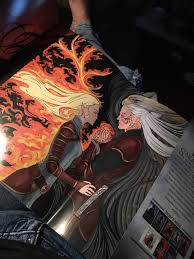

Emberek: Nagyon hasonlítanak a Földi emberekre azonban felelhető közöttük mágiával felvértezett emberek is.
Tündérek: nagyon hasonlítanak az emberekre de hegyes a fülük és sokkal erősebbek. Az összes tündér rendelkezik mágiával.
Vasfogúak: Az erőszakosabb fajtája a boszorkányoknak és esküdt elefele a Chorcanoknak. Vasfoggal és körömel rendelkeznek Chorcanok: Nem rendelkeznek vas testrészekkel és már tübb mint 500 éve bujdosnak a vasfogúak elöl